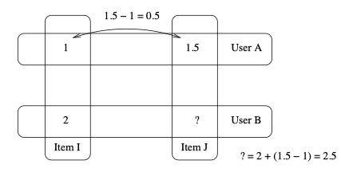

面向程序员的数据挖掘指南 - 2 隐式评价和基于物品的过滤算法¶
隐式评价¶
用户的评价类型可以分为显式评价和隐式评价。显式评价指的是用户明确地给出对物品的评价。最常见的例子是YouTube上的“喜欢”和“不喜欢”按钮，以及亚马逊的星级评价系统。
隐式评价，就是我们不让用户明确给出对物品的评价，而是通过观察他们的行为来获得偏好信息。示例之一是记录用户在纽约时报网上的点击记录，亚马逊上用户的实际购买记录。
我们可以收集到哪些隐式评价呢？ e.g. 网页方面：页面点击、停留时间、重复访问次数、引用率、Hulu上观看视频的次数；音乐播放器：播放的曲目、跳过的曲目、播放次数；
基于物品的过滤算法¶
目前为止我们描述的都是基于用户的协同过滤算法：将一个用户和其他所有用户进行对比，找到相似的人。这种算法有两个弊端：
- 扩展性：随着用户数量的增加，其计算量也会增加。这种算法在只有几千个用户的情况下能够工作得很好，但达到一百万个用户时就会出现瓶颈。
- 稀疏性：大多数推荐系统中，用户仅仅对一小部分物品进行了评价，这就造成了数据的稀疏性。比如亚马逊有上百万本书，但用户只评论了很少一部分，于是就很难找到两个相似的用户了。
修正的余弦相似度¶
使用余弦相似度来计算两个物品的距离。由于“分数膨胀”现象，需要从用户的评价中减去他所有评价的均值，这就是修正的余弦相似度(Adjusted Cosine Similarity)。这个公式来自于一篇影响深远的论文《基于物品的协同过滤算法》。
U表示同时评价过物品i和j的用户集合， \bar R_u表示用户u对所有物品的评价均值，s(i,j)表示物品i和j的相似度。

def cosinesimilarity(item1, item2, userRatings): averages = {} for item, ratings in userRatings.items(): averages[item] = (float(sum(ratings.values())) / len(ratings.values())) num = 0 # 分子 dem1 = 0 # 分母的第一部分 dem2 = 0 for (user, ratings) in userRatings.items(): if item1 in ratings and item2 in ratings: avg = averages[user] num += (ratings[item1] - avg) * (ratings[item2] - avg) dem1 += (ratings[item1] - avg) ** 2 dem2 += (ratings[item1] - avg) ** 2 return num / (math.sqrt(dem1) * math.sqrt(dem2))
预测¶
那下面该如何使用它来做预测呢？比如我想知道David有多喜欢Kacey Musgraves？
其中p(u,i)表示预测的用户u对物品i的评分，S_{i,N}表示物品i和N的相似度，R_{u,N}表示用户u对物品N的评分。N是一个物品的集合，有如下特性:用户u对集合中的物品打过分，物品i和集合中的物品有相似度数据。
Slope One算法¶
Slope One是另一种比较流行的基于物品的协同过滤算法。它最大的优势是简单，因此易于实现。Slope One算法是在一篇名为《Slope One：基于在线评分系统的协同过滤算法》的论文中提出的，由Lemire和Machlachlan合著。这篇论文非常值得一读。
我们用一个简单的例子来了解这个算法。假设A给Item I打了1分，Item J打了1.5分；B给Item I打了2分。我们要预测B会给Item J打几分。我们可以用以下逻辑来预测B对Item J的评分：由于A给Item J打的分数要比Item I的高0.5分，所以我们预测B也会给高0.5分。

可以将Slope One分为两个步骤：
- 首先需要计算出两两物品之间的差值（可以在夜间批量计算）。
- 第二步则是进行预测，比如一个新用户Ben来到了我们网站，他从未听过Whitney Houston的歌曲，我们想要预测他是否喜欢这位歌手。
计算差值¶
物品i与物品j之间的平均差异是：
其中S_{i,j}(X)表示包含同时评价过i,j的用户，\text{card}(S)表示S中有多少个元素，X表示所有评分值的集合；
如果有一个新进的用户对10个歌手做了评价，我们是否需要重新计算20万×20万的差异数据，或是有其他更简单的方法？ 答案是你不需要计算整个数据集，这正是Slope One的美妙之处。对于两个物品，我们只需记录同时评价过这对物品的用户数就可以了。
使用加权的Slope One算法进行预测¶
使用加权的Slope One算法来进行预测，用P^{WS1} 来表示，公式为：
其中：c_{j,i}=\text{card}(S_{j,i}(\chi))